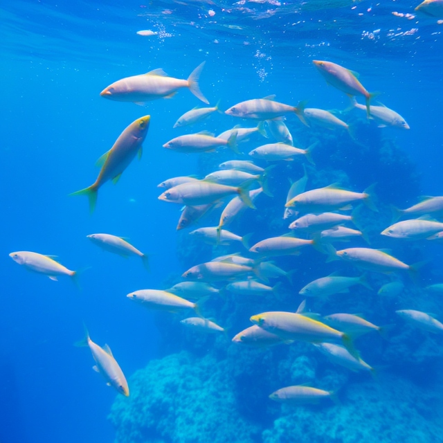
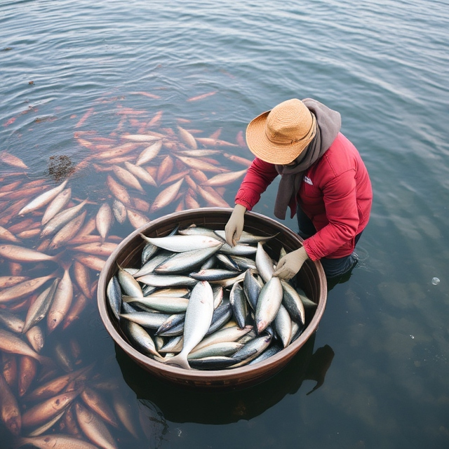

Your one-stop solution for supporting small-scale fish farmers in adopting sustainable aquaculture practices.
Follow the journey of sustainably sourced fish from the farm to your plate..
Track the journey of fish through the supply chain, providing transparency and trust to buyers who value ethical and sustainable practices.
Learn how to manage waste efficiently and reduce environmental impact, contributing to a cleaner and more sustainable future.
Discover the journey of your fish from farm to table with our traceability feature.
 